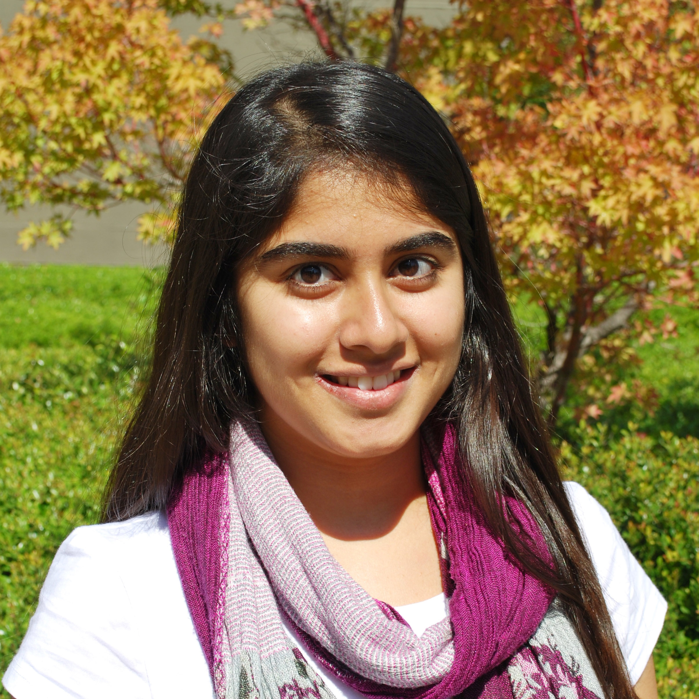

|
Home
People
Research
Press
Opportunities
Teaching
Google Scholar
Open Science
Framework
ORCID
Haas webpage
|
|
|
Don
Moore
Professor
of Management of Organizations
Curriculum
Vitae
Self-Aggrandizing
Autobiographical Sketch
Send
email
|
|
|
Ph.D.
Candidate
I
study why people make biased judgments and how they can improve their
accuracy. My dissertation examines when people are most likely to
leverage the power of algorithms to improve their accuracy: it tests
when people rely more advice from algorithms than other people. My
other work examines factors that exacerbate overconfidence, people's
overly positive beliefs about themselves and their performances, and
whether unrealistic optimism helps performance as much as people
believe it will.
Send email
|
|

|
Derek
Schatz
Ph.D.
Student
I
am a Ph.D. student at the University of California, Berkeley in the
Management of Organizations group at the Haas School of Business. I
currently explore a variety of topics relating to status,
overconfidence, and social judgment in the workplace. Prior to
enrolling at Haas, I conducted research at UC Berkeley as an
undergraduate Psychology major studying power and perceptual effects on
motivation.
|
|

|
Zack
Weinberg
Lab
Manager
I
am a second year student from Washington, D.C., majoring in Cognitive
Science and minoring in Computer Science. I am excited to have the
opportunity to gain research and management experience at the Accuracy
Lab. When I’m not busy obsessing about the decisions made by
my favorite football team, the Baltimore Ravens, I am interested in
researching the decision-making process. Specifically, I want
to learn more about what happens when people err at various points in
the process and why they make an incorrect judgment. In my free time I
enjoy playing soccer or reading sci
fi and dystopian novels (even though I almost always dislike the
endings).
|
|

|
Nishchala
Singhal
Undergraduate
Research Assistant
My
name is Nishchala, and
I am working as an undergraduate research assistant at the Moore Lab.
Currently, I am a third-year student majoring in Cognitive Science with
an emphasis on Cognitive Psychology. I enjoy studying about the
heuristics our mind employs to accomplish decision-making and judgment
and how these strategies can occasionally lead to errors. Consequently,
I am excited to have the chance to study this subject in the context of
algorithms. In my spare time, I enjoy traveling and watching movies.
|
|

|
Sydney
Mayes
Research
Assistant
I
graduated from UC Berkeley in 2013 with a B.A. in Cognitive Science and
emphases in Cognitive Psychology and Neuroscience. After working in the
food startup space, I am now looking forward to doing research in
judgment and decision-making and working with the Accuracy Lab team. I
am interested in how people make decisions under uncertainty and I hope
to contribute to research that will help us improve our forecasts,
which inform and guide our decisions. I am also interested in
human-centered design and user experience research, methodologies and
fields that can benefit greatly from research in the behavioral
sciences and vice versa. In my free time, I enjoy playing tennis,
keeping tabs on the food and beverage world, and writing about the
intersection of cognitive science and food.
|
|

|
Ekaterina
Goncherova
Undergraduate
Research Assistant
I
am currently a second year student at UC Berkeley, double majoring in
Psychology and Neurobiology. I am originally from St. Petersburg,
Russia, but grew up in St. Petersburg, Florida. My interest in
psychology is shaped by the polarized political views of the country
where I grew up. Decision making in particular is what fascinates me
about people: how is it that some could rely on algorithms, some advice
from their loved ones, and others can base their opinions on a complete
stranger's input. I believe decision making does not encompass all of
the characteristics that make people unique, but the neurobiological
bases helps to understand the reasoning behind unethical actions. This
is exactly what I hope to research in the future, and I cannot imagine
a better place to start than the Accuracy Lab.
|
|
|
Shreya
Agarwal
Undergratduate
Research Assistant
I
am a second year undergraduate student majoring in Economics and
Statistics. I started working with Moore Accuracy Lab in Spring 2016 as
I wished to explore creative ways to incorporate the use of algorithms
in various processes to make decision-making more efficient and
effective. Currently, I am working on understanding over-confidence in
organizational behavior. During my free time, I enjoy dancing and
traveling.
|
|
|
Amelia
Dev
Undergraduate
Research Assistant
My
name is Amelia and I'm an undergraduate research assistant at the Moore
Accuracy Lab as of Spring '16. I'm a junior Psychology major at Cal
with aspirations to pursue some sort of graduate/doctorate degree; my
ultimate goal is to work and/or research in the field of Clinical
Psychology. I'm thrilled to be involved with the awesome people and
projects at the Moore Lab and excited to learn more about the science
behind overconfidence. When I'm not doing academia-related things, you
can find me at the RSF or hiking in the hills.
|
Alumni
|

Elizabeth Tenney
Assistant Professor at University of Utah
|

Heather Yang
Graduate Student at the Massachusetts Institute of Technology
|

Dominique Lyew
College Counselor/Tutor at ATIM Educational Services
|

Jonathan Wang
Analyst at Cornerstone Research
|
|

Jen Kim
Global Marketing at Facebook
|

Sahaana Suri
Electrical Engineering Ph.D. program, Stanford
|

Cameron Hashemi
Self-Employed
|
Rebecca Xing
Associate at The Boston Consulting Group
|
|
Mark Lee
|

Shalena Srna
Graduate Student at Wharton School of Business
|

Mallika Bhavesh Ashani
Student at Berkeley
|

Nicole Anne Kurre
Student at Berkeley
|
|

Claire Lee
Student at Berkeley
|

Minal Baqi Khan
Student at Berkeley
|
Miriam Ataya
Berkeley Graduate
|

Julia Prims
Graduate Student at University of Illinois, Chicago
|
|

Torin Kalberg
Student at Berkeley
|

Madhav Goel
Student at Berkeley
|
Michael Eliot
Student at Berkeley
|

Jimmothy Trinh
Student at Berkeley
|
|

Ryan Goh
Student at Berkeley
|
|